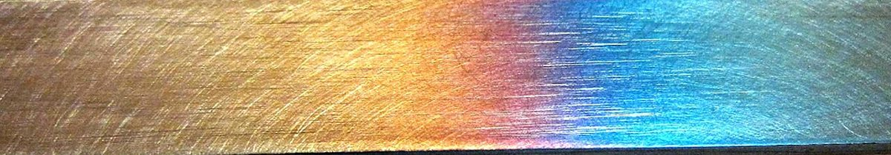
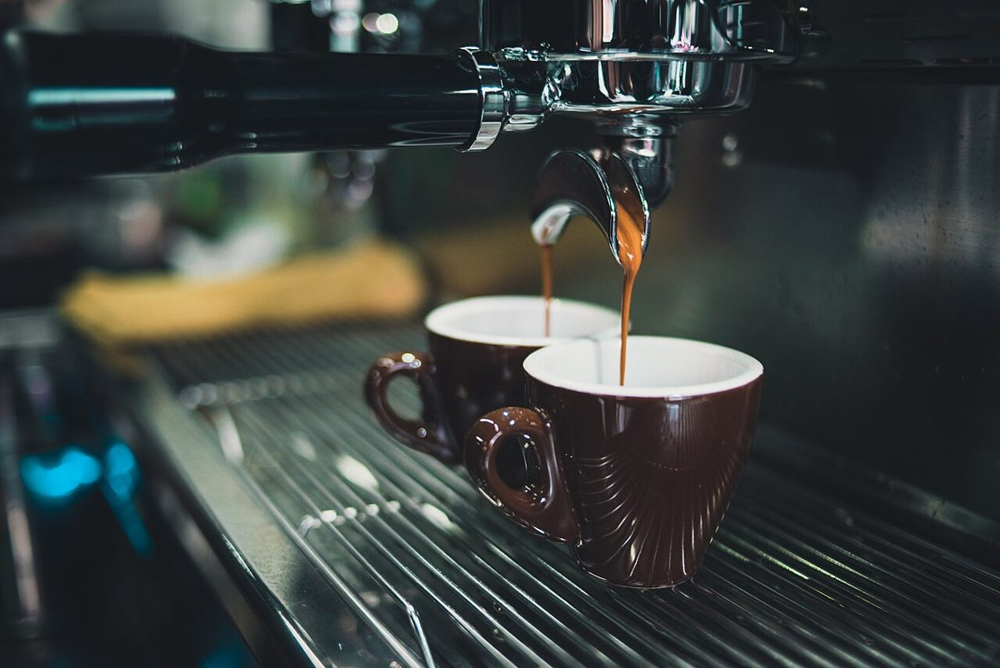

カフェ / 香川県観音寺市
YAMAYAsteel coffee
香川県観音寺市のカフェ「YAMAYA steel coffee」のご案内ページです。確認できているのは、住所・電話番号・Instagramだけ。営業時間やメニューは準備中です。
イメージ写真
金属のきらめきと、一杯。
お店の写真ではありません。国外または撮影地不明のフリー素材です。


ご案内
お店のこと(確認できたものだけ)
| 所在地 | 〒768-0069 香川県観音寺市茂木町４丁目６−１３ |
|---|---|
| 電話 | 0875-25-1384 |
| 営業時間 | 準備中 |
| 定休日 | 準備中 |
| ご予約 | 準備中 |
| 駐車場 | 準備中 |
| SNS | Instagram @yamaya_steel_coffee |